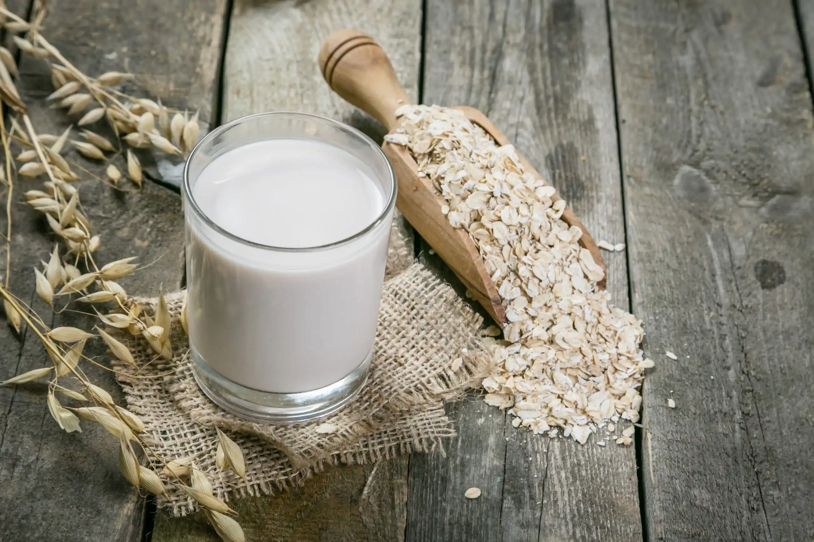

Oat Milk ★★★☆☆

Portions
1l
Ingredients
| 1 |
l |
Water |
| 10 |
g |
Oak |
| 1 |
spoon |
Oil (sunflower) |
| 1 |
spoon |
Sugar/Honey |
Steps
- Put all ingredients together and let the water sink into the oak for about 10min.
- Mix everything
Additonal Notes
- You may filter out the leftovers of the oak via a fine fabric or something comparable.
- If you like you may also add additional flavours like vanilla, chocolate or fruits to the drink.
- When in the fridge the dring stays fresh for about 3 days.
Tags